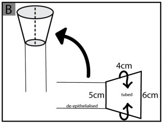

胸の上部（前胸部＝ぜんきょうぶ）の皮膚を、血流を保ったまま首や顔・のどへ運ぶ「デルトペクトラル皮弁（三角胸筋皮弁＝さんかくきょうきんひべん、deltopectoral flap）」を、頭頸部（頭・顔・首）の再建に本格的に用いた古典的な論文です。著者のBakamjian（バカムジアン）は、喉頭（こうとう）がんなどの手術でのど〜食道の入り口（咽頭食道＝いんとうしょくどう）を切除したあとの再建に、前胸部の皮膚を『二期的（にきてき＝2回に分けて行う）』な方法で用いる術式を報告しました。血管を切ってつなぎ直す顕微鏡手術（遊離皮弁＝ゆうりひべん）が普及する前の時代、頭頸部再建の主力（ワークホース）として長く使われた皮弁の原点とされます。
背景 ― 遊離皮弁がなかった時代の頭頸部再建
頭頸部（頭・顔・首）のがん手術では、腫瘍とともに皮膚・粘膜や、のど・食道の壁を大きく切除することがあります。切除後には、血流の乏しい面（露出した組織）を覆い、飲み込みや発声の通り道を作り直すため、血流を持った皮膚の塊＝皮弁（ひべん）が必要になるとされます。
1960年代当時、顕微鏡下に血管を縫い直して皮膚を移す遊離皮弁（ゆうりひべん）はまだ一般的ではなく、筋肉ごと皮膚を運ぶ筋皮弁（きんぴべん＝大胸筋皮弁など）も、より後の時代（1970年代末以降）に広まったものでした。そのため、離れた場所の皮膚を首・顔へ届けるには、皮膚を茎（けい＝血流の通り道）でつないだまま段階的に運ぶ有茎皮弁（ゆうけいひべん）が主な手段でした。
前胸部の皮膚は面積が広く、色や質感が顔・首に比較的なじみやすいことから、この部位を頭頸部再建のドナー（提供部位）として使えないかが課題でした。デルトペクトラル皮弁は、この前胸部の皮膚を、軸（じく）のはっきりした血管に載せて挙げるという発想から生まれた皮弁とされます。
この論文がしたこと
Bakamjianはこの Plastic and Reconstructive Surgery（PRS）誌 1965年の論文で、前胸部の皮膚弁（pectoral skin flap＝胸の皮膚弁）を用いて、咽頭食道（のど〜食道の入り口）を『二期的』に再建する方法を報告しました。論文のタイトルそのものが、この術式の骨子（前胸部皮膚弁による二期的な咽頭食道再建）を表しています。
なお、この1965年の論文には PubMed 上に抄録（しょうろく＝要約）が登録されていません。そのため本ページでは、論文のタイトルから確実に読み取れる内容（前胸部皮膚弁を用いた二期的な咽頭食道再建）と、その後の標準的な文献で整理されてきた一般的な知見とを、分けて説明します。原著の具体的な症例数や成績は、抄録から確認できないため記載しません。
この皮弁はのちに「デルトペクトラル皮弁（三角胸筋皮弁）」と呼ばれるようになりました。名前は、皮弁が三角筋（さんかくきん＝肩の筋肉）と大胸筋（だいきょうきん＝胸の大きな筋肉）のあいだの溝（三角筋胸筋溝＝deltopectoral groove）にかけて広がることに由来するとされます。
解剖と手技の要点
ここから先は、原著の抄録には具体的な記載がないため、その後の解剖学的研究で整理されてきた一般的な知見です。デルトペクトラル皮弁の主な血流源は、内胸動脈（ないきょうどうみゃく＝internal mammary / internal thoracic artery、胸骨の裏側を縦に走る動脈）から肋間（ろっかん＝肋骨と肋骨のあいだ）を通って皮膚に出てくる穿通枝（せんつうし＝深部の血管から皮膚へ立ち上がる細い枝）とされます。とくに第2・第3・第4肋間から出る穿通枝が主体とされ、胸骨のすぐ外側（おおむね1cmほど）に並びます。
これらの穿通枝が皮弁の内側（胸骨側）を養い、そこから外側（肩の方向）へ向かって、一定方向にまとまった血流が流れます。このように、はっきりした軸をもつ血管に沿って設計する皮弁を軸走型皮弁（じくそうがたひべん＝axial pattern flap）と呼びます。皮弁の内側は軸走型として血流が安定する一方、肩に近い外側の先端は軸の血流が届きにくく、不安定になりやすいとされます。そのため、あらかじめ皮弁の一部を切開して起こしておき血流が育つのを待つ「遅延（ちえん＝delay）」が併用されることもあったとされます。
咽頭食道の再建では、平らな皮膚を筒状（つつじょう＝チューブ状）に丸め、のど〜食道という管状の通り道の内張り（うちばり）を作ります（下図）。手技は二期的で、一般には、第1段階で皮弁を起こして欠損部へ運び入れ、血流でつながった茎を数週間かけて生着させたのち、第2段階でその茎を切り離して仕上げる、という流れとされます。

結果
前述のとおり、この1965年の原著には抄録が登録されていないため、原著が報告した具体的な症例数や生着率などの成績は、本ページでは確認できず記載しません。数値を推測で補うことはしていません。
確かなのは、タイトルが示すとおり、前胸部の皮膚弁を用いた二期的な咽頭食道再建の方法が報告された、という点です。この術式はその後の臨床で広く受け入れられ、頭頸部・咽頭食道再建の定番として普及していったとされます。
意義 ― なぜ「ワークホース」になったのか
デルトペクトラル皮弁は、遊離皮弁が普及する前の時代に、頭頸部・咽頭食道再建の主力（ワークホース＝働き者の馬。日常的に最もよく使う皮弁の意）として広く用いられたとされます。前胸部という「広くて運びやすい皮膚」を、内胸動脈穿通枝という「はっきりした軸の血管」に載せることで、離れた首・顔・のどまで有茎で確実に届けられるようにした点が評価されています。
1970年代末以降、筋肉ごと皮膚を運ぶ大胸筋皮弁（だいきょうきんひべん）や、顕微鏡下に血管を縫い直す遊離皮弁が普及すると、多くの再建が一期的（1回の手術）で行えるようになり、二期的なデルトペクトラル皮弁の出番は次第に減っていったとされます。それでも、遊離皮弁が使えない場面や、放射線治療を受けた首の再建などでは、今でも有用な選択肢として使われることがあります。
さらに近年は、この皮弁を内胸動脈の穿通枝1本に載せて島状（とうじょう＝周囲の皮膚から切り離し、血管の茎だけでつながった状態）に挙げる内胸動脈穿通枝皮弁（ないきょうどうみゃくせんつうしひべん＝IMAP皮弁）へと洗練され、より小さな傷で、より自由に回せる皮弁として受け継がれています。デルトペクトラル皮弁は、前胸部の皮膚を軸走型皮弁として再建に活かす道をひらいた、頭頸部再建史の礎（いしずえ）のひとつと位置づけられています。
この論文の要点
- 前胸部（胸の上部）の皮膚弁を用いて、咽頭食道（のど〜食道の入り口）を二期的（2回に分けて）に再建する方法を報告した（論文タイトルより）。
- この皮弁はのちに「デルトペクトラル皮弁（三角胸筋皮弁）」と呼ばれ、内胸動脈の穿通枝（主に第2〜4肋間）を血流源とする軸走型皮弁（axial pattern flap）とされる。
- 皮弁の内側は軸走型で血流が安定するが、肩側の先端は不安定になりやすく、遅延（血流を育てる前処置）が併用されることもあったとされる。
- 咽頭食道の再建では、平らな皮膚を筒状に丸めて、管状の通り道の内張りを作る。
- 遊離皮弁が普及する前の時代、頭頸部・咽頭食道再建の主力（ワークホース）として広く用いられたとされる。
- この1965年の原著には PubMed 上に抄録がなく、原著の具体的な症例数・成績は本ページでは確認できないため記載していない。
- のちに内胸動脈穿通枝皮弁（IMAP皮弁）へと洗練され、現在も受け継がれている。
用語ミニ辞典
- デルトペクトラル皮弁（三角胸筋皮弁）
- 前胸部の皮膚を、内胸動脈の穿通枝を血流源として挙げる皮弁。三角筋と大胸筋のあいだの溝（deltopectoral groove）にかけて広がることが名前の由来。遊離皮弁以前の頭頸部・咽頭食道再建で長く使われた。
- 内胸動脈（ないきょうどうみゃく）
- 胸骨の裏側を縦に走る動脈（internal thoracic artery とも呼ぶ）。肋間から皮膚へ出る穿通枝が、デルトペクトラル皮弁の主な血流源となる。
- 穿通枝（せんつうし）
- 深部の血管から筋肉や肋間を貫いて皮膚へ立ち上がる細い枝。ここでは内胸動脈から第2〜4肋間を通って前胸部の皮膚に達する枝を指す。
- 軸走型皮弁（axial pattern flap）
- はっきりした一方向の血管（軸）に沿って設計し、その血管でまとまった血流を得る皮弁。血流が読みやすく、細長い皮弁を安定して挙げられる。デルトペクトラル皮弁はその代表例とされる。
- 有茎皮弁 / 遊離皮弁
- 有茎皮弁は血管の茎（けい）でつながったまま移す皮弁。遊離皮弁は血管ごと切り離し、顕微鏡下で別の血管に縫い直す皮弁。デルトペクトラル皮弁は有茎皮弁にあたる。
- 二期的（にきてき）
- 手術を2回に分けて段階的に行うこと。第1段階で皮弁を運び入れ、血流が生着したのち、第2段階で茎を切り離して仕上げる。
- 咽頭食道（いんとうしょくどう）
- のど（咽頭）から食道の入り口にかけての、飲み込みの通り道。喉頭がんなどの手術で切除されると、再建して管状の通り道を作り直す必要がある。
- 遅延（ちえん / delay）
- 皮弁を挙げる前に、あらかじめ一部を切開して起こしておき、血流が育つのを待つ前処置。皮弁の先端まで血流を行き渡らせ、生着を確実にする狙いがある。
- 内胸動脈穿通枝皮弁（IMAP皮弁）
- デルトペクトラル皮弁を洗練させ、内胸動脈の穿通枝1本に載せて島状に挙げる皮弁。より小さな傷で自由に回せる。deltopectoral flap の現代的な後継とされる。
本ページは形成外科の学習・参照を目的とした編集部によるオリジナルの日本語解説で、原著（英語）の逐語訳・全文転載ではありません。正確な内容・数値・図は必ず上記リンク先の原著をご確認ください。
掲載している図は、原著の図ではありません。原著の図は出版社が著作権を持ち転載できないため、同じ術式・同じ解剖を扱った無料公開（オープンアクセス／CC BY）論文の図を、出典とライセンスを明記して引用しています。